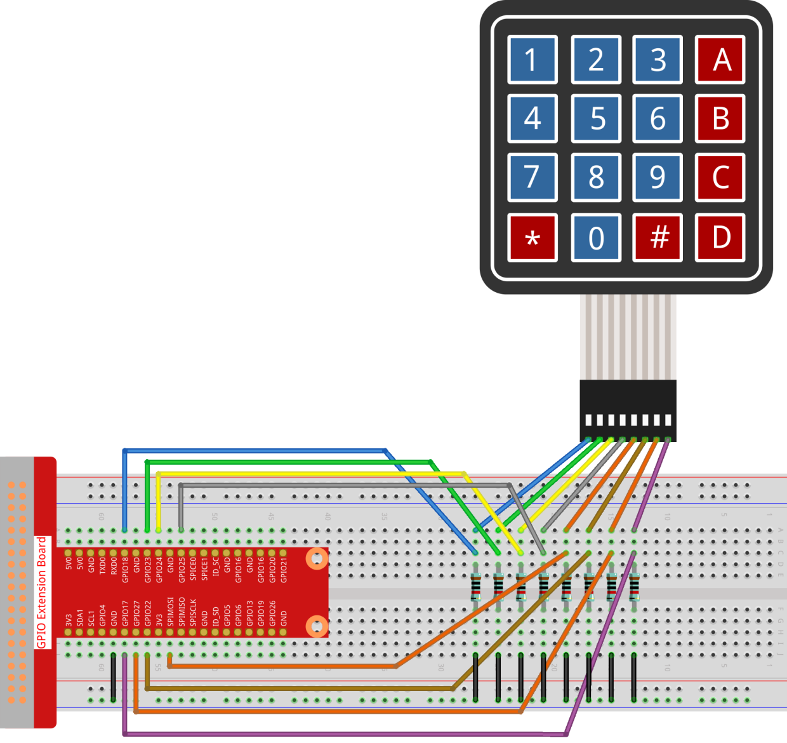
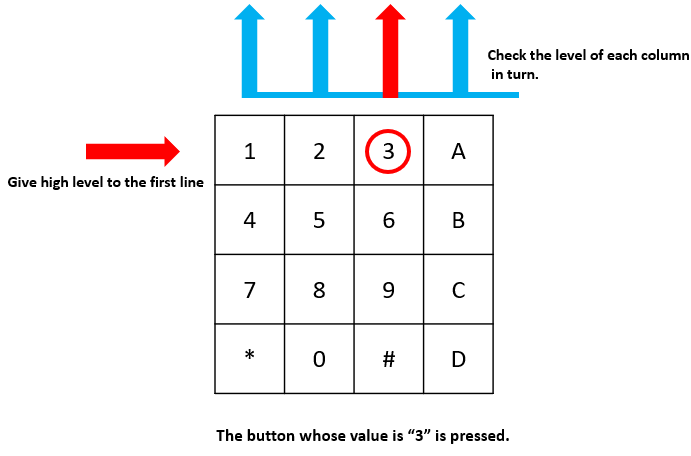

Nota
¡Hola! Bienvenido a la comunidad de entusiastas de SunFounder Raspberry Pi, Arduino y ESP32 en Facebook. Profundiza en Raspberry Pi, Arduino y ESP32 junto a otros entusiastas.
¿Por qué unirse?
Soporte Experto: Resuelve problemas postventa y desafíos técnicos con la ayuda de nuestra comunidad y equipo.
Aprender y Compartir: Intercambia consejos y tutoriales para mejorar tus habilidades.
Vistas Exclusivas: Obtén acceso anticipado a anuncios de nuevos productos y avances.
Descuentos Especiales: Disfruta de descuentos exclusivos en nuestros productos más recientes.
Promociones Festivas y Sorteos: Participa en sorteos y promociones de temporada.
👉 ¿Listo para explorar y crear con nosotros? Haz clic en [Aquí] y únete hoy.
2.1.5 Teclado
Introducción
Un teclado es una matriz rectangular de botones. En este proyecto, lo utilizaremos para ingresar caracteres.
Componentes

Principio
Teclado
Un teclado es una matriz rectangular de 12 o 16 botones ON-OFF. Sus contactos se acceden a través de un conector adecuado para su conexión a un cable plano o para su inserción en una placa de circuito impreso. En algunos teclados, cada botón conecta con un contacto separado en el conector, mientras que todos los botones comparten un terreno común.

Más comúnmente, los botones están codificados en matriz, lo que significa que cada uno de ellos conecta un par único de conductores en una matriz. Esta configuración es adecuada para el sondeo por parte de un microcontrolador, que puede ser programado para enviar un pulso de salida a cada uno de los cuatro cables horizontales a su vez. Durante cada pulso, se verifica secuencialmente los cuatro cables verticales restantes para determinar cuál de ellos, si acaso, está transportando una señal. Se deben agregar resistencias pull-up o pull-down a los cables de entrada para evitar que las entradas del microcontrolador se comporten de manera impredecible cuando no hay señal presente.
Diagrama Esquemático


Procedimientos Experimentales
Paso 1: Construir el circuito.
{kind=link}
Paso 2: Abre el archivo de código.
cd ~/davinci-kit-for-raspberry-pi/c/2.1.5/
Paso 3: Compilar el código.
gcc 2.1.5_Keypad.cpp -lwiringPi
Paso 4: Ejecutar.
sudo ./a.out
Después de ejecutar el código, se imprimirán en pantalla los valores de los botones presionados en el teclado (valor del botón).
Nota
Si no funciona después de ejecutarse, o si aparece un mensaje de error: "wiringPi.h: No such file or directory", consulta c code is not working?.
Código
#include <wiringPi.h>
#include <stdio.h>
#define ROWS 4
#define COLS 4
#define BUTTON_NUM (ROWS * COLS)
unsigned char KEYS[BUTTON_NUM] {
'1','2','3','A',
'4','5','6','B',
'7','8','9','C',
'*','0','#','D'};
unsigned char rowPins[ROWS] = {1, 4, 5, 6};
unsigned char colPins[COLS] = {12, 3, 2, 0};
void keyRead(unsigned char* result);
bool keyCompare(unsigned char* a, unsigned char* b);
void keyCopy(unsigned char* a, unsigned char* b);
void keyPrint(unsigned char* a);
void keyClear(unsigned char* a);
int keyIndexOf(const char value);
void init(void) {
for(int i=0 ; i<4 ; i++) {
pinMode(rowPins[i], OUTPUT);
pinMode(colPins[i], INPUT);
}
}
int main(void){
unsigned char pressed_keys[BUTTON_NUM];
unsigned char last_key_pressed[BUTTON_NUM];
if(wiringPiSetup() == -1){ // si la inicialización de wiring falla, imprime un mensaje en pantalla
printf("setup wiringPi failed !");
return 1;
}
init();
while(1){
keyRead(pressed_keys);
bool comp = keyCompare(pressed_keys, last_key_pressed);
if (!comp){
keyPrint(pressed_keys);
keyCopy(last_key_pressed, pressed_keys);
}
delay(100);
}
return 0;
}
void keyRead(unsigned char* result){
int index;
int count = 0;
keyClear(result);
for(int i=0 ; i<ROWS ; i++ ){
digitalWrite(rowPins[i], HIGH);
for(int j =0 ; j < COLS ; j++){
index = i * ROWS + j;
if(digitalRead(colPins[j]) == 1){
result[count]=KEYS[index];
count += 1;
}
}
delay(1);
digitalWrite(rowPins[i], LOW);
}
}
bool keyCompare(unsigned char* a, unsigned char* b){
for (int i=0; i<BUTTON_NUM; i++){
if (a[i] != b[i]){
return false;
}
}
return true;
}
void keyCopy(unsigned char* a, unsigned char* b){
for (int i=0; i<BUTTON_NUM; i++){
a[i] = b[i];
}
}
void keyPrint(unsigned char* a){
if (a[0] != 0){
printf("%c",a[0]);
}
for (int i=1; i<BUTTON_NUM; i++){
if (a[i] != 0){
printf(", %c",a[i]);
}
}
printf("\n");
}
void keyClear(unsigned char* a){
for (int i=0; i<BUTTON_NUM; i++){
a[i] = 0;
}
}
int keyIndexOf(const char value){
for (int i=0; i<BUTTON_NUM; i++){
if ((const char)KEYS[i] == value){
return i;
}
}
return -1;
}
Code Explanation
unsigned char KEYS[BUTTON_NUM] {
'1','2','3','A',
'4','5','6','B',
'7','8','9','C',
'*','0','#','D'};
unsigned char rowPins[ROWS] = {1, 4, 5, 6};
unsigned char colPins[COLS] = {12, 3, 2, 0};
Declara cada tecla del teclado matricial en el arreglo keys[] y define los pines en cada fila y columna.
while(1){
keyRead(pressed_keys);
bool comp = keyCompare(pressed_keys, last_key_pressed);
if (!comp){
keyPrint(pressed_keys);
keyCopy(last_key_pressed, pressed_keys);
}
delay(100);
}
Esta es la parte de la función principal que lee e imprime el valor del botón.
La función keyRead() leerá el estado de cada botón.
Las funciones keyCompare() y keyCopy() se utilizan para determinar si el estado de un botón ha cambiado (es decir, si se ha presionado o liberado un botón).
keyPrint() imprimirá el valor del botón cuyo nivel actual es alto (el botón está presionado).
void keyRead(unsigned char* result){
int index;
int count = 0;
keyClear(result);
for(int i=0 ; i<ROWS ; i++ ){
digitalWrite(rowPins[i], HIGH);
for(int j =0 ; j < COLS ; j++){
index = i * ROWS + j;
if(digitalRead(colPins[j]) == 1){
result[count]=KEYS[index];
count += 1;
}
}
delay(1);
digitalWrite(rowPins[i], LOW);
}
}
Esta función asigna un nivel alto a cada fila por turno, y cuando se presiona una tecla en la columna, la columna en la que se encuentra la tecla recibe un nivel alto. Después del juicio de los bucles anidados, la compilación del estado de la tecla generará un arreglo (result[]).
Al presionar el botón 3:
RowPin [0] escribe un nivel alto, y colPin[2] también obtiene un nivel alto. ColPin [0], colPin[1] y colPin[3] reciben un nivel bajo.
Esto nos da 0,0,1,0. Cuando rowPin[1], rowPin[2] y rowPin[3] están escritos en nivel alto, colPin[0]~colPin[4] recibirán nivel bajo.
Después de que se completa el juicio de los bucles, se generará un arreglo:
result[BUTTON_NUM] {
0, 0, 1, 0,
0, 0, 0, 0,
0, 0, 0, 0,
0, 0, 0, 0};
bool keyCompare(unsigned char* a, unsigned char* b){
for (int i=0; i<BUTTON_NUM; i++){
if (a[i] != b[i]){
return false;
}
}
return true;
}
void keyCopy(unsigned char* a, unsigned char* b){
for (int i=0; i<BUTTON_NUM; i++){
a[i] = b[i];
}
}
Estas dos funciones se utilizan para juzgar si el estado de la tecla ha cambiado; por ejemplo, cuando sueltas la mano al presionar “3” o presionando “2”, keyCompare() devuelve false.
KeyCopy() se usa para reescribir el valor actual del botón en el arreglo last_key_pressed[BUTTON_NUM] después de cada comparación. Así podemos compararlos la próxima vez.
void keyPrint(unsigned char* a){
//printf("{");
if (a[0] != 0){
printf("%c",a[0]);
}
for (int i=1; i<BUTTON_NUM; i++){
if (a[i] != 0){
printf(", %c",a[i]);
}
}
printf("\n");
}
Esta función se utiliza para imprimir el valor del botón que está actualmente presionado. Si se presiona el botón “1”, se imprimirá “1”. Si se presionan el botón “1” y el botón “3”, se imprimirá “1, 3”.